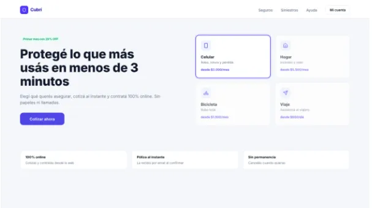

Caso de estudio · 2026
Cubrí Seguros
Plataforma web para la visualización y gestión de pólizas de seguros.
- HTML
- CSS
- JavaScript
- Netlify

01
Problema
Dificultad de los usuarios para visualizar y entender las opciones de seguros de forma rápida y clara.
02
Proceso
Diseño de interfaz centrada en la claridad de la información y maquetado responsivo para dispositivos móviles.
03
Solución
Una web intuitiva donde los usuarios pueden comparar los planes de seguros y contactar fácilmente.
04
Resultado
Despliegue exitoso en Netlify, logrando una interfaz accesible y de carga rápida.